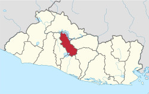

Departamento de Cuscatlan


Datos históricos importantes
Esta población fue fundada en tiempos de la época precolombina por tribus lencas, pero a fines del siglo XV fue sometida por los pipiles.
El municipio de Cuscatlàn se incorporó al departamento de San Salvador el 12 de junio de 1824; y así permaneció hasta el 28 de enero de 1835, cuando quedó incluido en el Distrito Federal. Pero el 30 de julio de 1839 volvió a ser municipio del departamento de San Salvador.
Lista de los municipios
- Cojutepeque
- Candelaria
- El Carmen
- El Rosario
- Monte San Juan
- Oratorio de Concepción
- San Bartolomé Perulapía
- San Cristóbal
- San José Guayabal
- San Pedro Perulapán
- San Rafael Cedros
- San Ramón
- Santa Cruz Analquito
- Santa Cruz Michapa
- Suchitoto
- Tenancingo
Centros turísticos importantes
- Lago de Suchitlán
- Cascada Los Tercios
- El Cerro Las Pavas
Lagos
- Lago de Suchitlán
- Lago artificial "Cerrón Grande"
Ríos
- Cascada Los Tercios
Volcanes o cerros
- El Cerro Las Pavas
Personajes célebres
- Alfonso Quiñonez
- Pío R. Bosque
- Arturo Araujo
- Max Olano